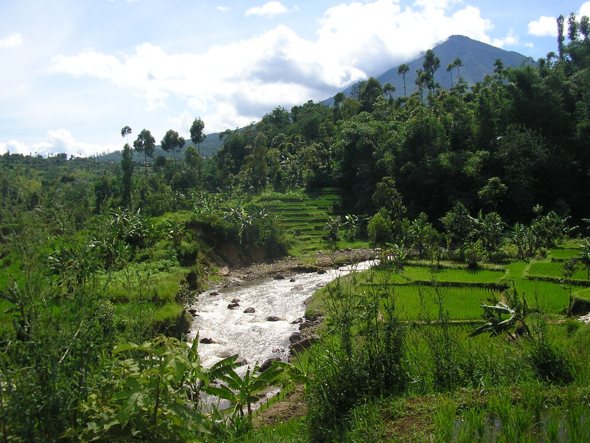
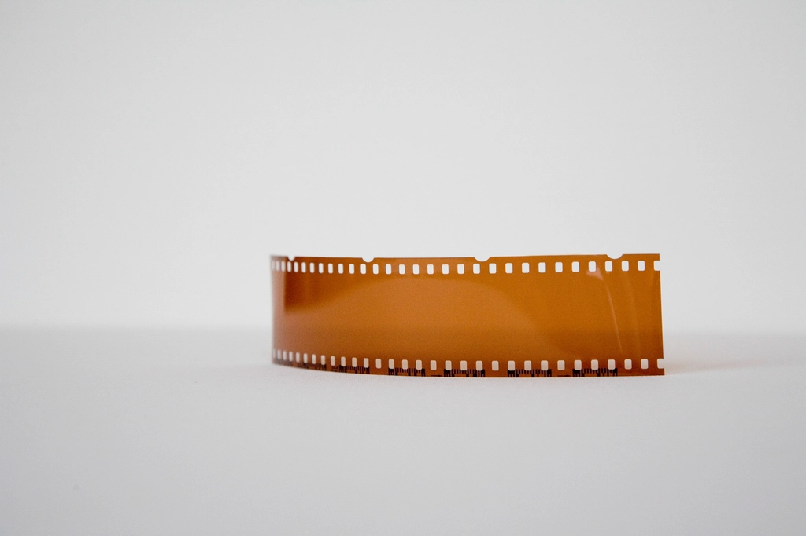
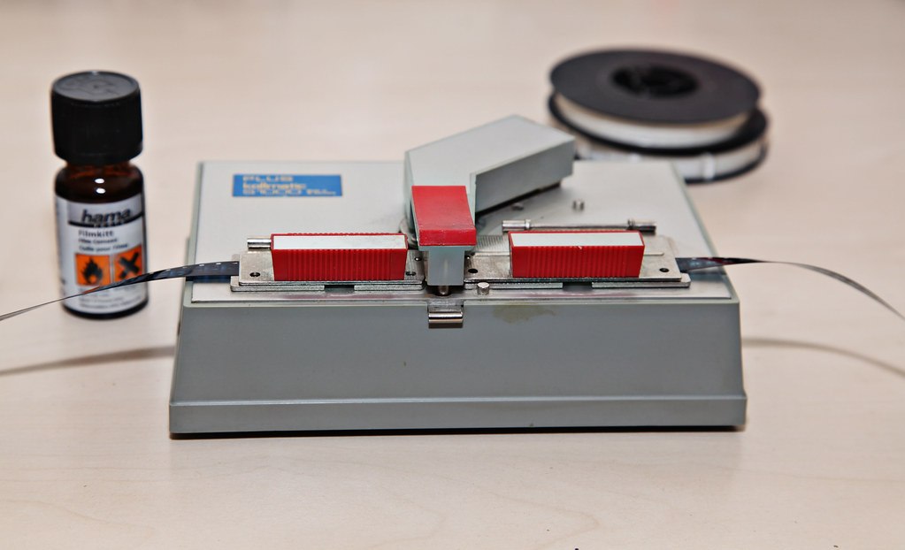
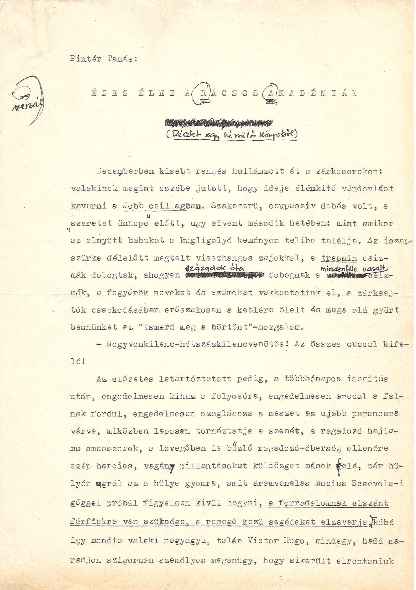
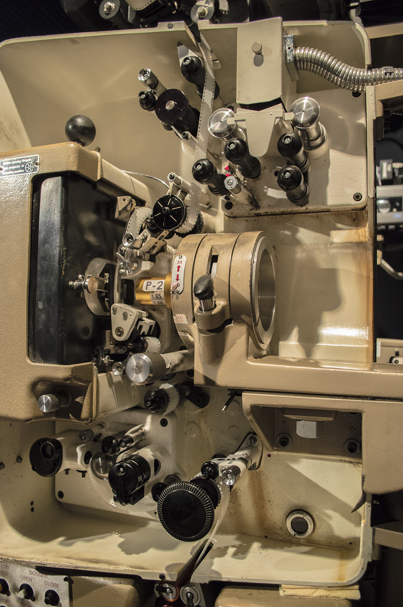

I write the cut before I make it.
Ibrahim Al Hanif edits video and motion graphics from Garut, Indonesia, in Adobe since 2018.
Open to fully remote contract work, high weekly hours, GMT+7
See the work
Written first
Before I open Premiere I write the piece as lines: what happens, in what order, at what speed. Then I cut the footage until it matches what I wrote. It is the reverse of how most edits are made, and it is why the rhythm survives the edit instead of being found in it.
-
“Di antara tawa dan langkah yang tergesa, kita menyimpan pertanyaan tentang hari esok.”
From students laughing in class to hurried hallway footsteps, the edit cuts sharply to an over-the-shoulder frame locked on the poster.
-
“Di luar sana dunia bergerak. Ada kesempatan di setiap pintu, menunggu untuk diketuk.”
A high-tempo street timelapse cuts into a rhythmic montage of alternating doors being knocked on, matching the voiceover cadence.
-
“Ada yang menemukan tempatnya di dunia kerja. Ada juga yang masih mencari arah. Itu proses.”
The cutting pace drops: a tight frame of fingers typing on a keyboard, then a quiet pause as the subject leans back and looks up, letting the rhythm breathe.
-
“Karena setelah SMA tidak ada peta pasti. Yang ada adalah keputusan. Dan keberanian untuk berubah.”
An orbital camera move circling the subject in an open field, flashing rapid flashback cuts before snapping straight to the closing title.
Selected work
Six pieces. Widescreen for the films, event teaser and montages, vertical for the social edits.

What I actually do
Multimedia production
Video editing, motion graphics, graphic design, photo retouching, event documentation and short form social video. This is the work I have been doing since 2018, and it is where my portfolio sits. I review a cut frame by frame before anyone else sees it.

Writing and analysis
Scriptwriting, analytical English prose and academic research writing. My final school research paper argued about boom and crash behaviour in cryptocurrency markets from an Islamic perspective, and my supervising teacher accepted it. IELTS 6.5, taken in 2025.

Review and remote delivery
Frame by frame visual review, close adherence to written guidelines, and checking other people's work before it is published, which was my job as chairperson of Rijaalul Ghad Mu'allimin. I work asynchronously from GMT+7.
I also write Python, JavaScript, HTML and CSS. This site is the first thing I have built with them, with source code open on GitHub.
About
I started in Adobe tools in 2018, as the student in a school organisation who got handed the footage. Over several years that became the whole chain: writing the script, shooting the documentation, cutting it and reviewing it before publication.
Writing came with it rather than after it. I read and write analytical English, and I am teaching myself programming and artificial intelligence. That is why I am comfortable with a written brief or a style guide: following a specification closely is the same discipline as cutting to a script.
I am in Garut, West Java, and available for high weekly hours.
Experience and education
Organisations
-
Publication and Documentation Staff
Kolega 76, event organising team
Produced photo and video documentation and promotional media to a brief and a fixed deadline. Wrote the script for the teaser video, then edited the footage myself.
-
Chairperson
Rijaalul Ghad Mu'allimin, senior secondary level
Led the student team, divided responsibilities, tracked progress and reviewed all output before publication.
-
Chairperson, second term
Rijaalul Ghad Tsanawiyyah, junior secondary level
Elected to lead the organisation after a first term in its creative division.
-
Creative Division Staff, first term
Rijaalul Ghad Tsanawiyyah, junior secondary level
Produced graphic design and video material to internal quality standards on a recurring deadline.
These were student organisation roles, not paid employment.
Education
-
Independent study
2026 to present
Studying programming and artificial intelligence on my own, while available full time for remote contract work.
-
Informatics, Universitas Padjadjaran
2025
Admitted through the SNBT national selection route and enrolled with active student status, then withdrew.
-
MA Persis Tarogong, science stream
Graduated May 2025
Wrote a research paper on boom and crash behaviour in cryptocurrency markets from an Islamic perspective, accepted by my supervising teacher.
-
Third place, International Robotic Games
PKP 2016, maze solving, junior category
-
7th National Honorable Mention, OPTIKA Mathematics Olympiad
Juara Harapan 7 Nasional, OPTIKA 23, 2023

Get in touch
Email is fastest. I reply in English or Indonesian.
ibrahimalhanif24@gmail.com